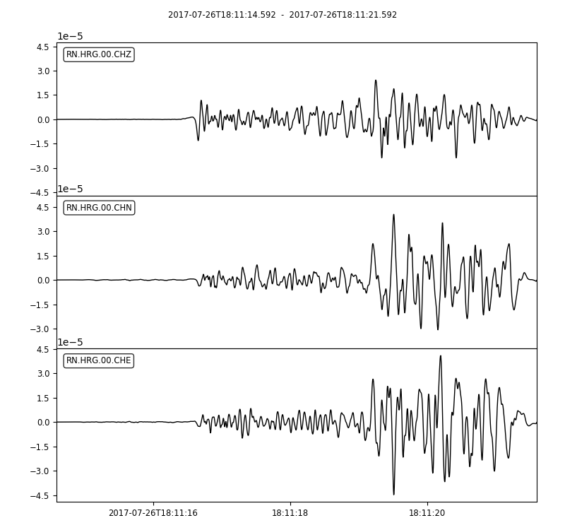
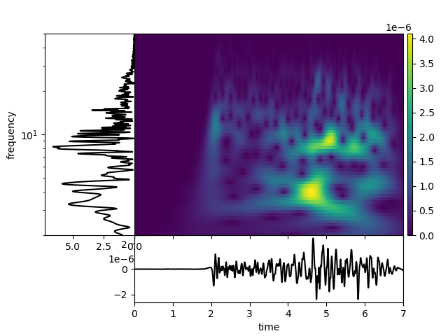

FK analysis of shallow earthquakes
This program imports a dataset (can be in various formats), transfers it's data into time series and can be further analysed with NumPy and ObsPy libraries.
Seismic events are usually recorded in three directions, hence there are three seismic traces in the figure above. This data can be further filtered based on specific needs.
After seirous of manipulations, FK analysis can be performed on the data.
This analysis was part of a research of shallow seismic events.